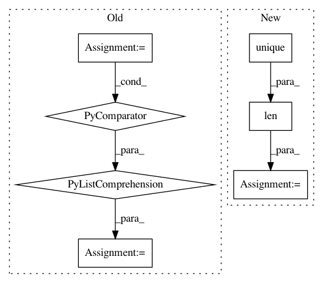

374ca541aaf62aba88a144acbbc7398ca3e995ef,category_encoders/ordinal.py,OrdinalEncoder,ordinal_encoding,#Any#Any#Any#Any#Any#,255
Before Change
if util.is_category(X[col].dtype):
categories = X[col].cat.categories
else:
categories = [x if x is not None else np.nan for x in pd.unique(X[col].values)]
data = {}
if handle_missing == "value":
After Change
else:
categories = X[col].unique()
index = pd.Series(categories).fillna(nan_identity).unique()
data = pd.Series(index=index, data=range(1, len(index) + 1))
if handle_missing == "value" and ~data.index.isnull().any():
data.loc[nan_identity] = -2
elif handle_missing == "return_nan":
In pattern: SUPERPATTERN
Frequency: 3
Non-data size: 7
Instances
Project Name: scikit-learn-contrib/categorical-encoding
Commit Name: 374ca541aaf62aba88a144acbbc7398ca3e995ef
Time: 2018-11-26
Author: jcastaldo08@gmail.com
File Name: category_encoders/ordinal.py
Class Name: OrdinalEncoder
Method Name: ordinal_encoding
Project Name: dPys/PyNets
Commit Name: 9da4cefc6f1d6ac053d948135a668c04d8a9f090
Time: 2017-11-09
Author: dpisner@utexas.edu
File Name: pynets/nodemaker.py
Class Name:
Method Name: parcel_masker
Project Name: SheffieldML/GPy
Commit Name: 486def6e0c0c415fd0bb168d9b81974a7ff37607
Time: 2015-10-06
Author: ibinbei@gmail.com
File Name: GPy/plotting/gpy_plot/latent_plots.py
Class Name:
Method Name: plot_latent_scatter